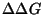
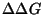

A nucleic acid secondary structure dot plot is a triangular plot that depicts base pairs as dots or other symbols. We shall refer to these symbols as dots. A dot in column i and row j of a triangular array, represents the base pair i.j. The advantage of a dot plot is that it can display the base pairs in more than 1 folding simultaneously. It can be used to compare a few foldings, or the base pair distribution in many millions of foldings.
Mfold computes a number,
 for every possible base
pair, i.j. This is the minimum free energy of any folding that
contains the i.j base pair. As above, we let
for every possible base
pair, i.j. This is the minimum free energy of any folding that
contains the i.j base pair. As above, we let  be the
overall minimum folding free energy, and

a user
selected free energy increment. Clearly
be the
overall minimum folding free energy, and

a user
selected free energy increment. Clearly
The energy dot plot gives an overall visual impression of how ``well-defined''
the folding is. A cluttered plot, or cluttered regions, indicate either
structural plasticity (the lack of well-defined structure) or else the
inability of the algorithm to predict a structure with confidence. A
couple of crude measures of ``well-definedness'' have been introduced
in mfold . The first is ``P-num''.
is a measure of the
level of promiscuity of ri in its pairing with other bases in
foldings within
of  .
It is the number of different base
pairs, i.j, or k.i that can form in this set of foldings, and is
simply the number of dots in the ith row and ith column of
the energy dot plot . If
is defined to be 1 when
``expression'' is true, and 0 otherwise, then P-num may be defined as:
.
It is the number of different base
pairs, i.j, or k.i that can form in this set of foldings, and is
simply the number of dots in the ith row and ith column of
the energy dot plot . If
is defined to be 1 when
``expression'' is true, and 0 otherwise, then P-num may be defined as:
There are 5 files associated with the energy dot plot .
`FILE_NAME.PLOT' : This is a text file that contains all the
base pairs on the energy dot plot , organized into helices for which
 is
constant. The first record is a header, and each subsequent record
describes a single helix. The records are usually sorted by
is
constant. The first record is a header, and each subsequent record
describes a single helix. The records are usually sorted by
 ,
and are often filtered so that short helices or isolated
base pairs (helices of length 1) in suboptimal foldings are
removed. Figure 9 shows a sample plot file.
,
and are often filtered so that short helices or isolated
base pairs (helices of length 1) in suboptimal foldings are
removed. Figure 9 shows a sample plot file.
level length istart jstart energy
1 8 206 242 -972
1 7 319 434 -972
1 7 108 141 -972
1 7 53 185 -972
1 6 334 412 -972
1 6 308 444 -972
1 6 288 472 -972
1 6 247 279 -972
...
2 4 8 23 -971
2 2 69 78 -971
2 4 1 24 -970
2 2 10 17 -970
2 3 345 400 -967
2 2 297 462 -967
...
|
`FILE_NAME.ANN' : This file contains P-num information for a particular . The ith record contains i and . This file is used for annotating plotted structures.
`FILE_NAME.H-NUM' : This file is the same as
`file_name.plot', except that the ``energy'' column is replaced by an
``h-num'' column. These files are usually sorted by h-num; lowest to
highest, or best determined to worst determined. Often, only helices
in optimal foldings are retained. Figure 10 shows part of a
sorted and filtered h-num file corresponding to the plot file in
Figure 9.
level length istart jstart h-num
1 4 38 194 6.8
1 4 215 232 7.3
1 5 31 201 8.4
1 7 53 185 8.4
1 2 47 189 11.0
1 8 206 242 11.9
1 6 61 176 13.7
1 4 89 163 13.8
1 3 255 271 14.0
1 3 104 145 15.0
1 1 68 79 16.0
1 4 121 131 17.0
1 6 288 472 17.3
...
1 2 353 389 35.0
1 3 364 377 38.7
1 3 297 459 39.0
|
`FILE_NAME.PS' : This is a PostScript file of the energy dot plot .
`FILE_NAME.GIF' : This is an image of the energy dot plot in ``gif'' format, suitable for display on web pages.
 | Michael Zuker Institute for Biomedical Computing Washington University in St. Louis 1998-12-05 |